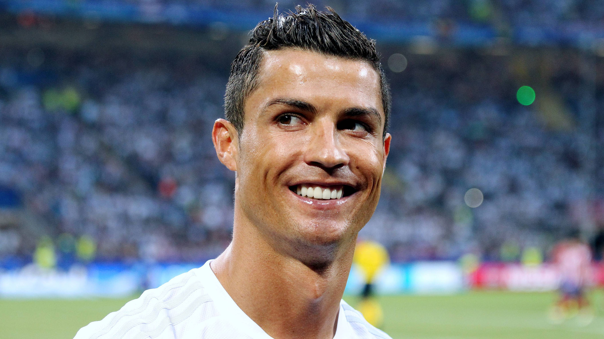

Binance $1B Class Action — Harvesting His Own Fans
The endorsement timeline: On 23 June 2022 Ronaldo signed a multi-year exclusive NFT deal with the world's largest crypto exchange, Binance, loudly announcing that 'we will change the NFT game'. In November that year, on the eve of the Qatar World Cup, the first 'CR7' NFT collection dropped — animated statues capturing iconic moments of his career, priced from $77 to $10,000.
The price of going viral: The lawsuit alleges Ronaldo's celebrity endorsement directly drove a 500% spike in Binance search traffic, exposing more than 100 million users to his ads. Fans opened Binance accounts and bought tokens like BNB 'because of Ronaldo' — tokens that the US SEC has classified as unregistered securities.
The $1 billion class action: On 27 November 2023 the US District Court for the Southern District of Florida certified a class action seeking over $1 billion. Plaintiff attorney Moskowitz alleged Ronaldo 'encouraged his tens of millions of fans and supporters to invest in the Binance platform' and failed to disclose his endorsement compensation as required under US securities-law rules for celebrity promotion.
The NFT cliff dive: Most ironically, the 'CR7 NFT' in fans' hands — the entry-level $77 drop — fell to about $1 within a year, a 99% crash. The promise to 'change the NFT game' ultimately became 'changing fans' wallets'.
The SEC's warning: SEC chair Gary Gensler had repeatedly warned that celebrities endorsing crypto-asset securities must publicly disclose how much they were paid and whose product they were fronting. Ronaldo was alleged to have 'known or should have known that Binance was selling unregistered crypto securities', yet still fronted for it.
Binance's own stain: Just two weeks before the suit, Binance and its founder Changpeng Zhao (CZ) had pleaded guilty to anti-money-laundering violations and paid a $4.3 billion fine, with CZ stepping down. Ronaldo choosing this moment to keep fronting a convicted exchange was slammed as 'caring only about the endorsement fee'.
Refusing to stop: Through 2024-2025 Ronaldo and Binance kept dropping new NFT series (such as the '#7heSelection' commemorating his 950th goal), even running a 'highest bidder wins a trip to Saudi Arabia to meet Cristiano' promo. The lawsuit hangs unresolved; the harvesting never pauses.